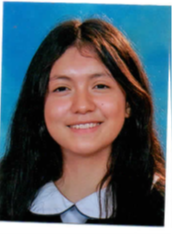

Calle 103B No. 154-61 | Tel: 5636075 | Cel: 320-2230072 | Correo: gabriela.miranda@reuvenschool.edu.co | Número de identificación: 1014871356
Estudiante de grado Octavo de secundaria en el Colegio Reuven Feurstein. Me considero una persona responsable en mis estudios y deberes, disciplinada, que le gusta trabajar en equipo. Mis materias favoritas son biología, historia, geografía y francés.
Quiero estudiar Biología en la Universidad Nacional de Colombia o en la Javeriana, más específicamente Biología marina. Aspiro a viajar por varios países de Latinoamérica y conocer Corea del Sur. También deseo crear un emprendimiento relacionado con el arte, como pintar cuadros o vender materiales específicos. Aspiro a mejorar mi nivel de inglés y continuar progresando en francés.
En mis tiempos libres, pinto en acuarela y óleo. Me gusta realizar manualidades, como la elaboración de tarjetas para cumpleaños. También disfruto montar patines y bicicleta, ver series coreanas y actualmente estoy leyendo el cómic Persépolis. Me gusta cocinar, especialmente postres, y amo viajar.